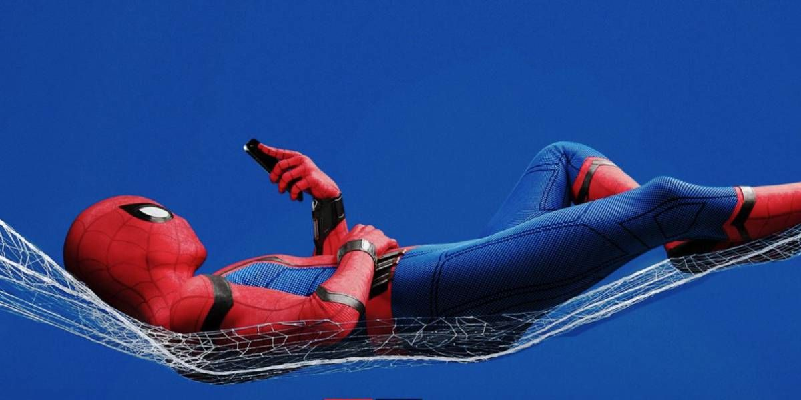

Spider-Man
Spider-Man (llamado Hombre Araña en muchas de las traducciones al español) es un superhéroe ficticio creado por los escritores y editores Stan Lee y Steve Ditko. Apareció por primera vez en el cómic de antología Amazing Fantasy # 15 (10 de agosto de 1962), en la Edad de Plata de los cómics. Aparece en los cómics estadounidenses publicados por Marvel Comics, así como en varias películas, programas de televisión y adaptaciones de videojuegos ambientadas en el Universo Marvel. En las historias, Spider-Man es el alias de Peter Parker, un huérfano criado por su tía May y su tío Ben en la Ciudad de Nueva York después de que sus padres Richard y Mary Parker murieron en un accidente aéreo. Lee y Ditko tuvieron que lidiar con los problemas de la adolescencia y los problemas financieros, y lo acompañaron con muchos personajes de apoyo, como J. Jonah Jameson, Flash Thompson, Harry Osborn, los intereses románticos, Gwen Stacy y Mary Jane Watson, y enemigos como el Doctor Octopus, Kingpin, Duende Verde y Venom. Su historia de origen lo tiene adquiriendo habilidades relacionadas con la araña después de un mordisco de una araña radioactiva; estos incluyen aferrarse a las superficies, disparar telarañas desde dispositivos montados en la muñeca y detectar el peligro con su "sentido arácnido".
